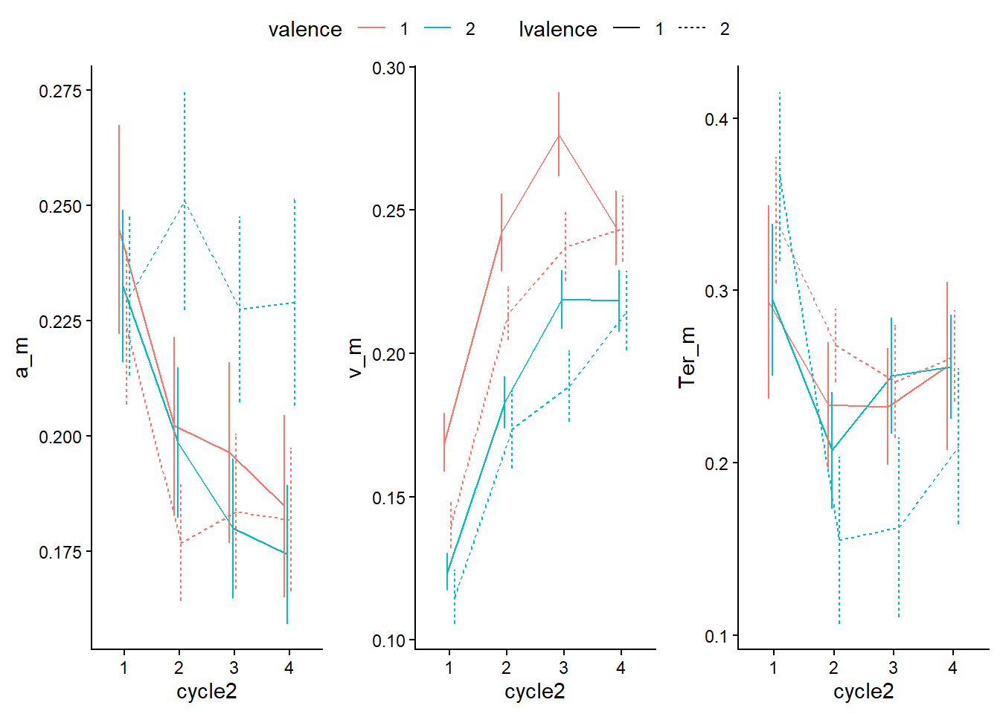
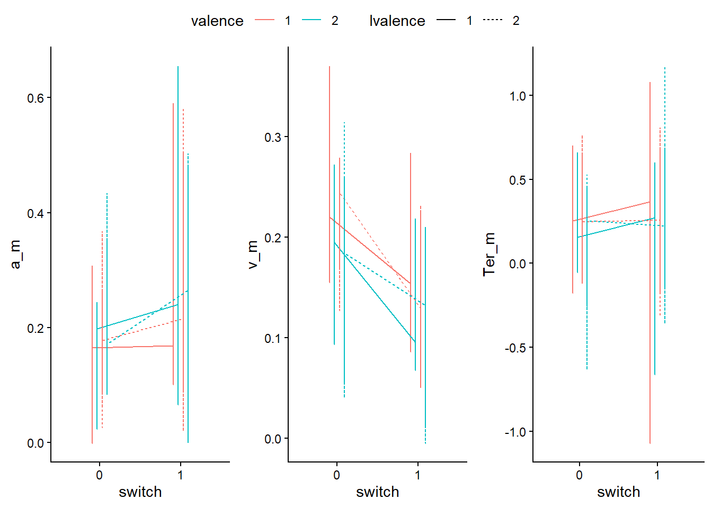

This script cleans and analyses the AlternateRuns Dataset.
Variables - block: 0 for practice, there are a total of 8 blocks per part and each block consists of 112 trials. So 896 trials per participant over all 7 blocks (not counting practice)
bal: counterbalancing of conditions across blocks
x, y, c2: irrelevant (already taken out)
cycle: counting within full alternating cycle (8), switch at 1 and 5
task: 1=shape, 2=color
dimshape=specific shapes–4=neutral
dimcolor=specific color–4=neutral
correct: correct response (i.e., value of the currently relevant task dimension)
error: 0 = no error, 1 = yes error
response: actual response
RT: or response time
Data Cleaning
Rename variables for clarity, remove practice blocks and subjects with > 80% accuracy, compute z-scores and create switch + valence + lag variables.
#rename columns to understand betteralt_run <- AlternateRuns %>%rename(dimshape = dim1, dimcolor = dim2, rt = time) %>%#remane variables filter(block !=0) #filter practice trials outalt_run <- alt_run %>%group_by(id, block, trial) %>%#remove sub 57 showing up 3 timesslice(1)#determine 80% acc#crit # need at least 179 out of 896 trials to be correct, denoted by 0 in error colsum_er <- alt_run %>%group_by(id) %>%summarize(acc =mean(1-error), N =n())sum_er
Here we test whether experimental manipulations of previous and current trial control demands interact with the switch contrast in a manner that is consistent with a flexibility/stability tradeoff model.
checking for conflict effects by adding it into the model
# model_conflictcheck <- lmer(# rt_log ~ valence_contr * lvalence_contr * cycle_helmert +(valence_contr + lvalence_contr + cycle_helmert || id), control = lmerControl(optimizer = 'bobyqa'),# data = alt_run %>% filter(filter_correct == 0, conflict == 0, lconflict == 0)# )# # summary(model_conflictcheck)# # tab_model(model_conflictcheck, show.est = T, auto.label = F, show.stat = T , df.method = 'satterthwaite') #this does change the significance of two way interactions with switch
by rt log with valence contrasts
model_lmer_log_c <- xfun::cache_rds({lmer(rt_log ~ valence_contr * lvalence_contr *switch+ (valence_contr + lvalence_contr +switch|| id), #double bar bc does not converge with single, is less complex w double control =lmerControl(optimizer ='bobyqa'),data = alt_run %>%filter(filter_correct ==0))}, dir ="sophia/output/", file ="model_lmer_log_c.rds", rerun = rerun_all)summary(model_lmer_log_c)
# model_lmer_log_conflict <- lmer(# rt_log ~ valence_contr * lvalence_contr * conflict * lconflict *cycle_helmert +# (valence_contr + lvalence_contr + cycle_helmert+ conflict + lconflict | id), #double bar bc does not converge with single, is less complex w double ONLY when effects are numeric not factor# data = alt_run %>% filter(filter_correct == 0)# )# # summary(model_lmer_log_conflict)# # # tab_model(model_lmer_log_conflict, show.est = T, auto.label = F, show.stat = T, df.method = 'satterthwaite')
by Error
by error with valence contrasts
model_glmer_c <- xfun::cache_rds({glmer( error ~ valence_contr * lvalence_contr*switch+ (valence_contr + lvalence_contr +switch|id), family ='binomial', control =glmerControl(optimizer ='bobyqa'), data = alt_run)}, dir ="sophia/output/", file ="model_glmer_c.rds", rerun = rerun_all)summary(model_glmer_c)
alt_run_agg_ID_ddm <- alt_run %>%mutate(RT_s = rt/1000) %>%#convert rt to secondsgroup_by(id, valence, lvalence, switch, cycle2) %>%summarize(RT_s_m =mean(RT_s[filter_correct ==0], na.rm =TRUE),RT_s_var =var(RT_s[filter_correct ==0], na.rm =TRUE),error =mean(error, na.rm =TRUE),N_trials =n()) %>%rowwise() %>%#this is looking at everything in one row, have to agg data like this for DDM becuase it does not compute vectors but rowsmutate(ezddm =list(ezddm(propCorrect =convert_extremes(1-error), #were essentially making a dataframe that shows up as an extra cell next to each partrtCorrectVariance_seconds = RT_s_var, rtCorrectMean_seconds = RT_s_m, nTrials = N_trials))) %>%unnest(ezddm) #this extracts the newly created dataframe per column into its own separate columns
`summarise()` has grouped output by 'id', 'valence', 'lvalence', 'switch'. You
can override using the `.groups` argument.
Oops, propCorrect == 0.5 (chance performance; drift will be close to 0). Added 0.00001 to propCorrect.
Oops, propCorrect == 0.5 (chance performance; drift will be close to 0). Added 0.00001 to propCorrect.
`summarise()` has grouped output by 'valence', 'lvalence', 'switch'. You can
override using the `.groups` argument.
#make a separate object that is averaging across the no-switch 2,3 and 4 average within those and then average within those variances. #this agg is the one we use for he lmer modelsalt_run_agg_ID_ddm_collapsed <- alt_run %>%#doing this a different way, if we groupby everything but cycle, the switch v no-switch will auto treat 2,3,4 as averaged i thinkmutate(RT_s = rt/1000) %>%#convert rt to secondsgroup_by(id, valence,valence_contr, lvalence, lvalence_contr, switch) %>%summarize(rt_log =mean(rt_log[filter_correct ==0], na.rm =TRUE),RT_s_m =mean(RT_s[filter_correct ==0], na.rm =TRUE),RT_s_var =var(RT_s[filter_correct ==0], na.rm =TRUE),error =mean(error, na.rm =TRUE),N_trials =n()) %>%rowwise() %>%#this is looking at everything in one row, have to agg data like this for DDM becuase it does not compute vectors but rowsmutate(ezddm =list(ezddm(propCorrect =convert_extremes(1-error), #were essentially making a dataframe that shows up as an extra cell next to each partrtCorrectVariance_seconds = RT_s_var, rtCorrectMean_seconds = RT_s_m, nTrials = N_trials))) %>%unnest(ezddm) #this extracts the newly created dataframe per column into its own separate columns
`summarise()` has grouped output by 'id', 'valence', 'valence_contr',
'lvalence', 'lvalence_contr'. You can override using the `.groups` argument.
Warning: There were 4608 warnings in `summarize()`.
The first warning was:
ℹ In argument: `a_ci_lower = get_ci(a, a_m)[1]`.
ℹ In group 1: `id = "1"`, `valence = 1`, `valence_contr = -0.5`, `lvalence =
1`, `lvalence_contr = -0.5`, `switch = 0`.
Caused by warning in `qt()`:
! NaNs produced
ℹ Run `dplyr::last_dplyr_warnings()` to see the 4607 remaining warnings.
`summarise()` has grouped output by 'id', 'valence', 'valence_contr',
'lvalence', 'lvalence_contr'. You can override using the `.groups` argument.
DDM vis
plt_ddm_a <-ggplot(alt_run_agg_ddm, aes(x = cycle2, y = a_m, color = valence, linetype = lvalence, group =interaction(valence,lvalence )))+geom_line(position =position_dodge(width =0.25))+geom_errorbar(aes(ymin = a_ci_lower, ymax = a_ci_upper), width =0.1, position =position_dodge(width =0.25))+theme_classic()plt_ddm_v <-ggplot(alt_run_agg_ddm, aes(x = cycle2, y = v_m, color = valence, linetype = lvalence, group =interaction(valence,lvalence )))+geom_line(position =position_dodge(width =0.25))+geom_errorbar(aes(ymin = v_ci_lower, ymax = v_ci_upper), width =0.1, position =position_dodge(width =0.25))+theme_classic()plt_ddm_Ter <-ggplot(alt_run_agg_ddm, aes(x = cycle2, y = Ter_m, color = valence, linetype = lvalence, group =interaction(valence,lvalence )))+geom_line(position =position_dodge(width =0.25))+geom_errorbar(aes(ymin = Ter_ci_lower, ymax = Ter_ci_upper), width =0.1, position =position_dodge(width =0.25))+theme_classic()ggpubr::ggarrange(plt_ddm_a, plt_ddm_v, plt_ddm_Ter, common.legend =TRUE, nrow =1)

#ok this works but idk how to interpret
plotting with the aggregation averaging between no-switch cycles
plt_ddm_a <-ggplot(alt_run_agg_ddm_collapsed, aes(x =switch, y = a_m, color = valence, linetype = lvalence, group =interaction(valence,lvalence)))+geom_line(position =position_dodge(width =0.25))+geom_errorbar(aes(ymin = a_ci_lower, ymax = a_ci_upper), width =0.1, position =position_dodge(width =0.25))+theme_classic()plt_ddm_v <-ggplot(alt_run_agg_ddm_collapsed, aes(x =switch, y = v_m, color = valence, linetype = lvalence, group =interaction(valence,lvalence)))+geom_line(position =position_dodge(width =0.25))+geom_errorbar(aes(ymin = v_ci_lower, ymax = v_ci_upper), width =0.1, position =position_dodge(width =0.25))+theme_classic()plt_ddm_Ter <-ggplot(alt_run_agg_ddm_collapsed, aes(x =switch, y = Ter_m, color = valence, linetype = lvalence, group =interaction(valence,lvalence)))+geom_line(position =position_dodge(width =0.25))+geom_errorbar(aes(ymin = Ter_ci_lower, ymax = Ter_ci_upper), width =0.1, position =position_dodge(width =0.25))+theme_classic()ggpubr::ggarrange(plt_ddm_a, plt_ddm_v, plt_ddm_Ter, common.legend =TRUE, nrow =1)

DDM Models
with valence contrasts
model_a_c <- xfun::cache_rds({lmer(a ~ valence_contr * lvalence_contr *switch+ (valence_contr+lvalence_contr+switch|| id), control =lmerControl(optimizer ="bobyqa"), data = alt_run_agg_ID_ddm_collapsed)}, dir ="sophia/output/", file ="model_a_c.rds", rerun = rerun_all)summary(model_a_c)
#need to use function coeficents(autocor_model_c) to get the averages from the model and put it back into the dataframe to get indivusual subject averages back into the data. need to create a new dataframe with this information left_join into dataframe
Warning: Model failed to converge with 3 negative eigenvalues: -7.7e-03
-3.0e+02 -1.0e+03
Warning: Model failed to converge with 3 negative eigenvalues: -7.7e-03
-3.0e+02 -1.0e+03
rt_log_res_w_s_int_c
Predictors
Estimates
CI
Statistic
p
(Intercept)
-0.12
-0.15 – -0.09
-9.20
<0.001
valence2
0.00
-0.01 – 0.01
0.75
0.452
lvalence2
-0.03
-0.04 – -0.02
-6.15
<0.001
switch1
0.41
0.38 – 0.45
24.26
<0.001
lrt_log_res_w_s_int_c
0.09
0.08 – 0.11
10.49
<0.001
valence2:lvalence2
0.06
0.04 – 0.07
8.34
<0.001
valence2:switch1
0.06
0.04 – 0.08
6.37
<0.001
lvalence2:switch1
0.05
0.03 – 0.07
5.44
<0.001
valence2:lrt_log_res_w_s_int_c
0.04
0.02 – 0.06
3.87
<0.001
lvalence2:lrt_log_res_w_s_int_c
-0.03
-0.05 – -0.01
-3.02
0.003
switch1:lrt_log_res_w_s_int_c
0.02
-0.02 – 0.06
1.06
0.291
valence2:lvalence2:switch1
-0.11
-0.14 – -0.08
-7.55
<0.001
valence2:lvalence2:lrt_log_res_w_s_int_c
0.02
-0.01 – 0.05
1.61
0.107
valence2:switch1:lrt_log_res_w_s_int_c
0.03
-0.02 – 0.09
1.32
0.187
lvalence2:switch1:lrt_log_res_w_s_int_c
-0.01
-0.06 – 0.04
-0.45
0.655
valence2:lvalence2:switch1:lrt_log_res_w_s_int_c
-0.09
-0.16 – -0.02
-2.60
0.009
Random Effects
σ2
0.14
τ00id
0.02
τ11id.valence2
0.00
τ11id.lvalence2
0.00
τ11id.switch1
0.02
τ11id.lrt_log_res_w_s_int_c
0.00
ρ01
-1.00
0.59
0.21
0.12
N id
96
Observations
64276
Marginal R2 / Conditional R2
0.211 / NA
psychometric differences
#first from the long format calculate the drift rate then when you pivot wider add in drift rate did this earlier #reorg using pivot wider, each subject is a row and have a column for every possible combination of valenceindif <- alt_run_agg_ID_ddm_collapsed %>%pivot_wider(id_cols = id, names_from =c(valence, lvalence, switch), values_from =c(v, a, Ter, rt_log, error), names_glue ="{.value}_s{switch}_cbiv{valence}_lbiv{lvalence}") %>%ungroup()indif
#first from the long format calculate the drift rate then when you pivot wider add in drift rate#building up model 1 lm(v_s1_cbiv1_lbiv1 ~ v_s0_cbiv1_lbiv1,data = indif ) %>%summary()
Call:
lm(formula = v_s1_cbiv1_lbiv1 ~ v_s0_cbiv1_lbiv1, data = indif)
Residuals:
Min 1Q Median 3Q Max
-0.111977 -0.035549 -0.008772 0.030413 0.133501
Coefficients:
Estimate Std. Error t value Pr(>|t|)
(Intercept) 0.03025 0.01905 1.588 0.116
v_s0_cbiv1_lbiv1 0.60808 0.07974 7.626 1.93e-11 ***
---
Signif. codes: 0 '***' 0.001 '**' 0.01 '*' 0.05 '.' 0.1 ' ' 1
Residual standard error: 0.05531 on 94 degrees of freedom
Multiple R-squared: 0.3822, Adjusted R-squared: 0.3756
F-statistic: 58.16 on 1 and 94 DF, p-value: 1.929e-11